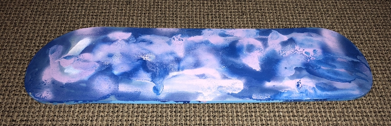
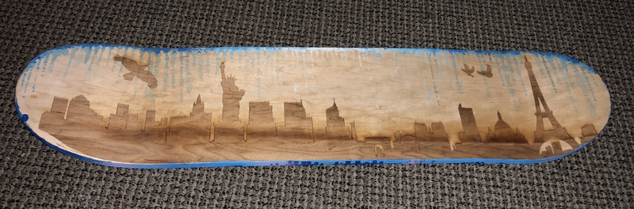

For the first period of the rotation I found the pictures that I want to laser-cut. I used the silhouette of city skyline of New York and Paris and combine them. I also put an eagle top of the New York silhouette and birds on top of Paris. I thought thry are the cymbol of the two cities.
In order to make the cutting look deeper in color, I slowed the raster speed to 30 and it went out pretty dark.
For the third period, I glued the woods together and put them in a bag and vacuum all the air out of it.
During my free time, I took the skateboard to the artroom and paint blue drops and sprayed on it. After that in coated my skateboard with SPAR Urethane.
 
I really like how my skateboard turned out! I probably will put wheels on it.